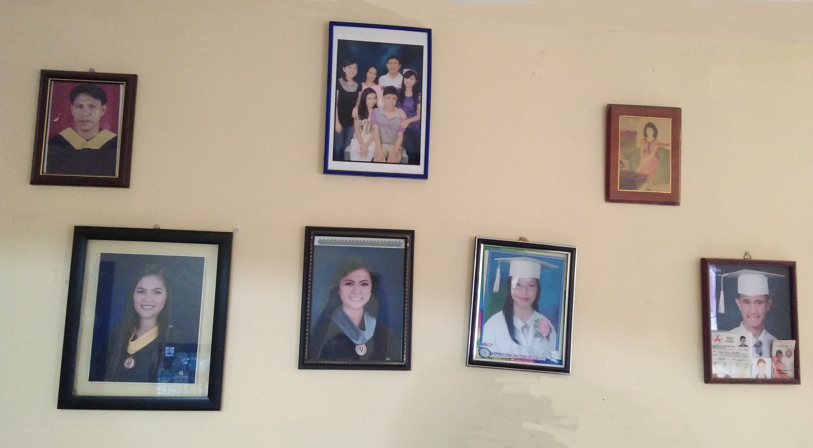

Info About Me:
Hi! My name is Ina Marie Cabangon, 19 years of age. Currently, I am 3rd year studying Bachelor of Science in Psychology at De la Salle University- Dasmariñas. I am an alumnus in Bacoor National High School- Villa Maria Annex and Likha Molino Elementary School. I graduated as 2nd honorable mention in high school while I received “huwarang bata” award in elementary.
People describe me as introverted, shy, passive, quiet, or any word related to that. I like spending most of my time alone that’s why others often perceive me as someone who is hard to approach. In reality, I want to make friends but I just lack confidence. I like to relate with what others are feeling and try to understand their perspective. That is why studying psychology really help me to be open up with others.
